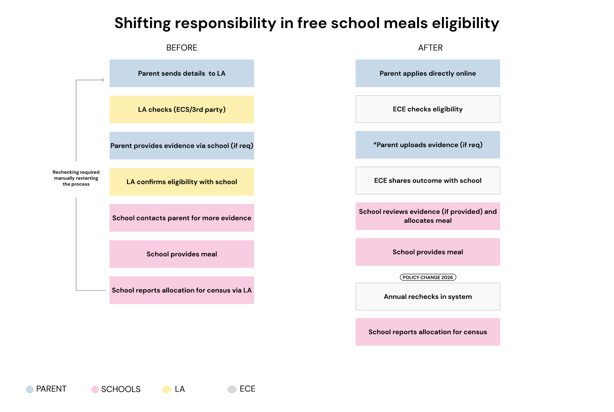
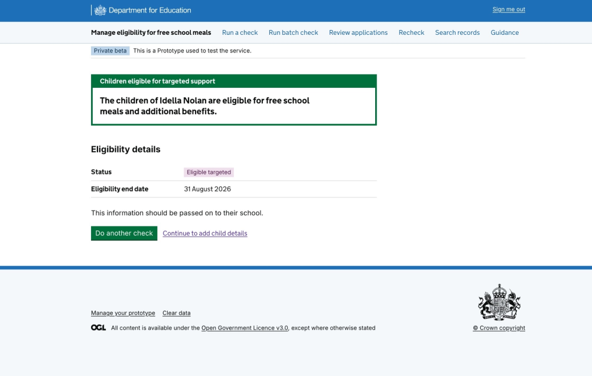
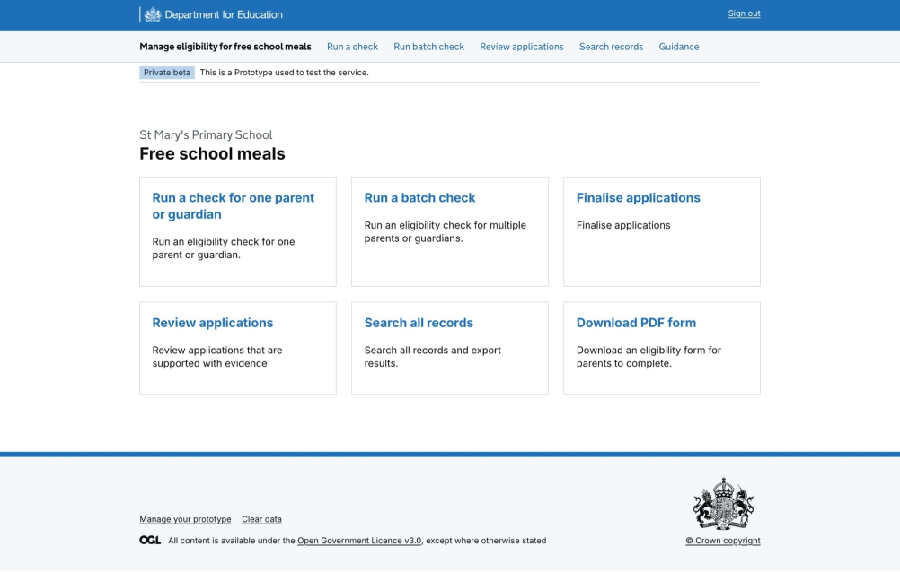
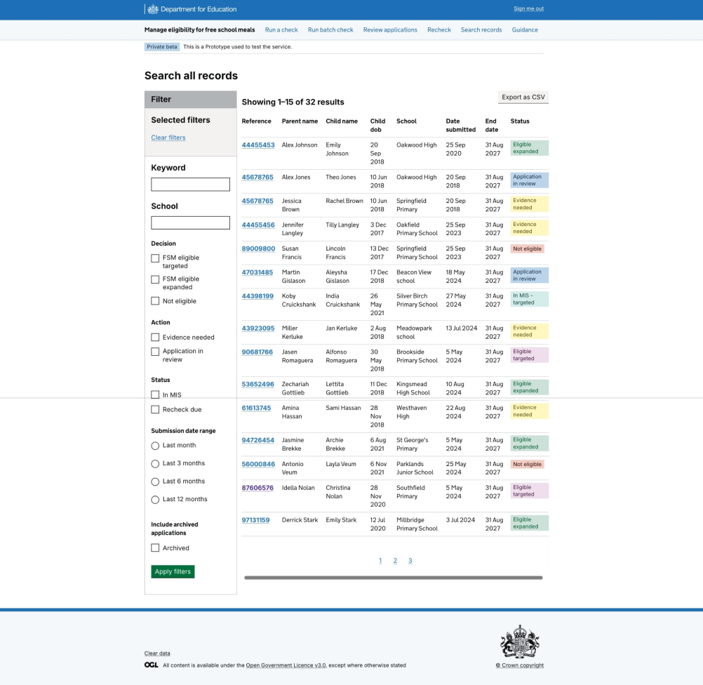

Overview
A national entitlement service, rebuilt from the system up
The Eligibility Checking Engine (ECE) is a national platform underpinning Free school meals and childcare entitlement decisions across England and Wales, supporting over 2.2 million children and hundreds of thousands of families.
The work directly enables the UKs Government flagship mission to reduce poverty by improving access to financial support.
Operating as Principal Service designer I led the design team across the programme, working closely with the Product owner and internal stakeholders to ensure we were aligned with the overall vision. Shaping how the service worked for schools, local authorities, families, DfE policy and support teams not just at interface level, but across the wider operating model and service ecosystem whilst aligning with evolving policy and Government Government Digital Service standards.
The programme delivers millions of eligibility checks underpins a system worth billions in public benefit annually and has been recognised with a Gold Award at the IESE Awards 2026 and a finalist in the National Technology Awards.
Context & scale
When I joined the programme the discovery had identified the technical systems and user journeys, but the deeper ecosystem understanding was still emerging. We needed to understand how the service worked across different user groups, where the pain points were, and what the future service needed to achieve.
The service landscape existed as a patchwork of legacy systems, manual processes and disconnected responsibilities. Schools and local authorities were spending significant administrative effort managing a process that should have been near-invisible.
At the same time, policy change meant the service needed to move from fragmented local authority-led processes towards a school-enabled national model that could scale safely and meet GDS expectations.
The challenge
This was not an interface redesign. It was a service transformation spanning policy, eligibility logic, operational processes, data flows, governance and front-stage user journeys.
The challenge was to make the service clearer and more scalable while balancing the needs of different local authorities with different incentives, including schools, local authorities and the Department for Education.
Understanding the system (ecosystem mapping)
The eligibility service operates within a complex ecosystem spanning central government, local authorities, schools, and multiple external data sources. Before shaping the service, I needed to understand how decisions, data, and responsibilities were distributed across this landscape. I mapped the ecosystem to:
- clarify ownership across organisations
- identify fragmentation and duplication
- expose risks in how eligibility decisions were made
- understand where the service needed to integrate, not replace
Understanding the service (blueprint)
The blueprint was a critical tool for understanding the service beyond the interface layer, exposing how eligibility states, operational handoffs and support processes worked across the end-to-end journey. It helped identify where design work needed to go beyond screen-level interactions to address operational handoffs, eligibility states and support processes.
Role & leadership Service design and system transformation
The interaction design was important, but the deeper design work was in making eligibility states, service
outcomes and next actions understandable across different users and organisations.

Designing for operational clarity, not just interface polish




Impact
The work helped create a clearer national service direction, stronger understanding of the end-to-end journey, and better alignment between policy, delivery and operational needs.
It supported decisions about how schools could interact with the service more effectively, what future rollout would require, and how the service could evolve to support national scale more reliably.